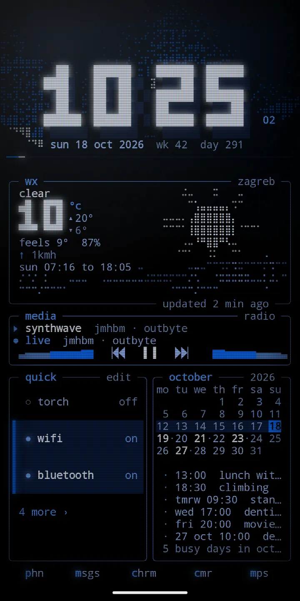
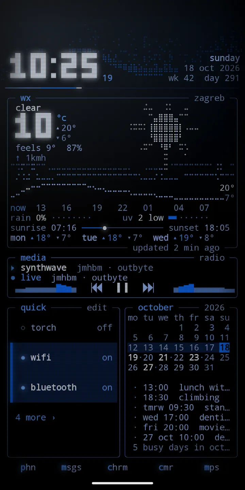
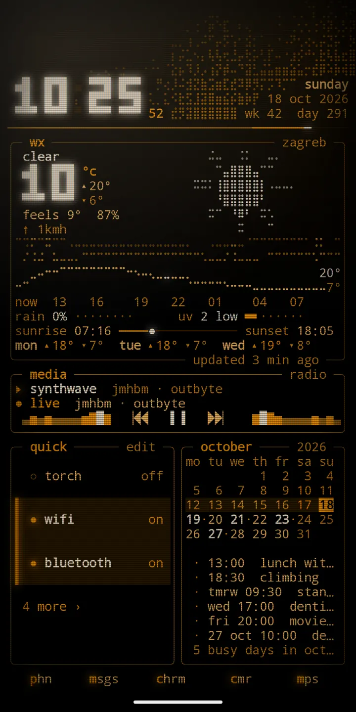

android launcher · user guide
Phosphor
Your home screen, as a living terminal. Phosphor draws your whole home screen in text, like an old monitor: a big block clock, a sky that follows the real weather, live gauges, your notifications, small tools, cliamp radio and your apps, all on one glowing grid.
This is the guide and the place to report bugs and ask for features. The app itself is on Google Play.

what it is
Everything you see is one character grid. Box lines, blocks and braille are drawn as shapes, so panels join with no gaps. The clock glows, digits glitch when they change, and an ambience like rain can fall through the empty cells.
pages
Up to ten pages you swipe between. Each one is a preset layout, a tool, or a page you build yourself from panels.
panels
Clock, weather, forecast, notifications, agenda, month, quick actions, apps, notes, briefing, now playing, player, radio, monitor and every tool.
looks
Fourteen themes: ten that glow and four light ones that print like ink on paper. CRT glass, ambiences and a night mode.
lock screen
A live wallpaper draws your lock screen in the same grid, theme and glow as home.
screenshots
From a real phone. Scroll sideways for more.
home: clock, weather, now playing, quick actions and the month 
inbox: notifications first 
monitor: battery, memory and network 
edit mode: size, move and remove panels 
add a panel: the picker 
radio: cliamp stations 
weather: sky, hours and sun times 
the amber theme
quick start
- Install Phosphor from Google Play. It runs on Android 7 or newer.
- Open it. The setup guide walks you through six steps: home screen, lock screen, notifications, system lock cards, weather and calendar, and battery.
- Take the tour. It shows each gesture on your own home and you try it.
- Swipe sideways for pages, swipe up for apps and search, swipe down for notifications.
- Hold empty space for edit mode. From there you add panels, manage pages, change the look and open settings.
- Pick a theme under look, and your home is ready.
guide
Install, gestures, pages, edit mode, panels, themes, lock screen, settings, battery and accessibility.
cookbook
Short recipes: a music page, a calm page, night mode, weather for several cities.
help
Answers to common questions, fixes for common problems, and how to report a bug.